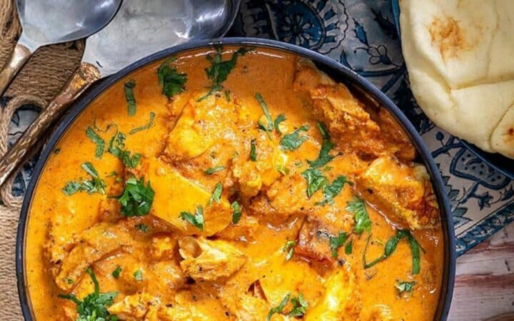

[Instant Pot] Butter Chicken

Description
Delicious Butter Chicken recipe optimized for ease of use with an Instant Pot.
Butter Chicken a recent recipe I learned with my Instant Pot and is now one of my favorites.
Ingredients
- 14oz can tomatoes
- 5-6 cloves garlic
- 1-2 tsps minced ginger
- 1 tsp turmeric
- 1/2 tsp cayenne pepper
- 1 tsp smoked paprika
- 1 tsp salt
- 1 tsp garam masala
- 1 tsp ground cumin
- 1 pound boneless skinless chicken breast if frozen add 1-2 minutes to cook time
- To Finish:
- 4oz (one stick) butter cut into cubes
- 4oz heavy cream
- 1/2 cup chopped cilantro
Instructions
- Place all ingredients into an Instant Pot in the order listed, EXCEPT for the butter, cream and 1 teaspoon of the garam masala, mixing the sauce well before you place the chicken on top of the sauce. If it's frozen, push it into the sauce a bit so it defrosts better
- Close the cooker and set for 10 mins on high, and let it release pressure naturally for 10 minutes. After that, release all remaining pressure.
- Open up the pot and remove the chicken carefully and set aside
- Blend together all the ingredients, preferably using an immersion blender
- Add the cut up butter, cream, cilantro, and garam masala and stir until well incorporated.
- It's best to let the sauce cool just a little before adding the butter and the cream. Adding it into the boiling sauce will make your sauce very thin. If that happens, just put it in the fridge for a little and let it thicken up. It should be thick enough to coat the back of a spoon
- Take out half the sauce and freeze for later or store in the fridge for 2-3 days
- Add the chicken back in and heat through. Break it up into smaller pieces if you need but don't shred it.
- Serve over basmati rice
And there we have it Butter Chicken